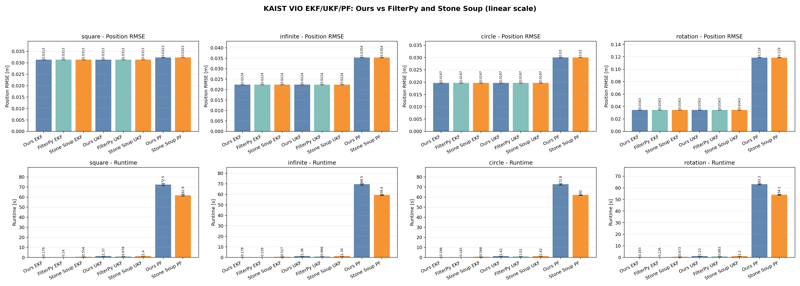
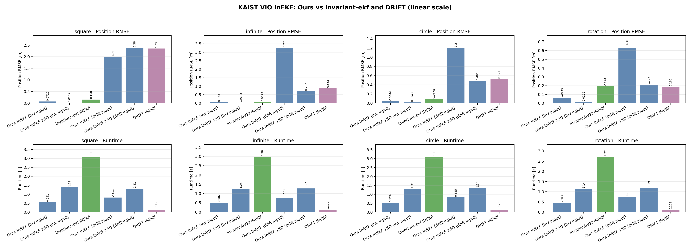
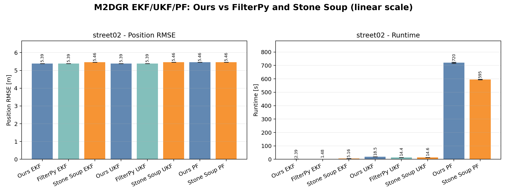

Motivation: What Is Different Here
Most filtering examples compare algorithms inside separate assumptions: different data loaders, different state conventions, different plots, and often different measurement preprocessing. This repository keeps those moving parts fixed so that filter behavior is easier to attribute to the estimator design itself.
One benchmark surface
The benchmark scripts route FilterPy, Stone Soup, invariant-ekf, DRIFT, and local implementations through a common dataset/output contract.
Comparable local filters
EKF, UKF, and PF use the same constant-velocity state and the same GNSS observation model. That makes differences in linearization, sigma-point propagation, and sampling visible.
Lie-group inertial filter
The 15D InEKF uses an \(SE_2(3)\) nominal state with orientation, velocity, position, gyro bias, and accelerometer bias in the error state.
Shared Notation
The notation below is used consistently across the four filter descriptions. Superscript \(^{-}\) means a prediction before measurement correction, and subscript \(k\) denotes the current timestep.
| Symbol | Meaning |
|---|---|
| \(x_k\) | Euclidean state for EKF, UKF, and PF: \(x_k=[p_k^\top, v_k^\top]^\top\), with \(p_k,v_k\in\mathbb{R}^d\). |
| \(X_k\) | InEKF nominal matrix state on \(SE_2(3)\): rotation \(R_k\), velocity \(v_k\), and position \(p_k\). |
| \(\delta x_k\) | InEKF error state \([\delta\theta^\top,\delta v^\top,\delta p^\top,\delta b_g^\top,\delta b_a^\top]^\top\in\mathbb{R}^{15}\). |
| \(u_k\) | Control or IMU input. For the constant-velocity model it may provide acceleration; for InEKF it stores acceleration and angular velocity. |
| \(z_k\) | GNSS or position-like measurement. |
| \(Q_k,R_k\) | Process and measurement covariance matrices. |
| \(P_k\) | State covariance for EKF/UKF, and error-state covariance for InEKF. |
Shared Constant-Velocity Model
In the implementation, \(d=2\) or \(d=3\), and \(H_k\) selects configured position coordinates.
Filter Implementations
Extended Kalman Filter
The EKF is the linearized Gaussian estimator over the shared state \(x_k=[p_k,v_k]\). In this benchmark the transition and measurement functions are already linear for the constant-velocity path, so the Jacobians are exactly \(F_k\) and \(H_k\).
Unscented Kalman Filter
The UKF uses the same \(x_k\), \(f\), and \(h\), but replaces local Jacobian linearization with Merwe sigma points. This keeps the notation aligned with EKF while changing how predicted moments are computed.
Particle Filter
The PF is a bootstrap filter over the same \(x_k=[p_k,v_k]\). The state posterior is represented by particles \(\{x_k^{(i)},w_k^{(i)}\}_{i=1}^N\), which lets the estimator represent non-Gaussian beliefs when measurements or dynamics become less friendly to a single covariance ellipse.
Resampling is triggered when \(N_{\mathrm{eff}}\) falls below the configured threshold, and optional measurement rejuvenation can refresh particle positions and finite-difference velocities around recent measurements.
15D Invariant Kalman Filter
The InEKF keeps the navigation state on \(SE_2(3)\) and updates a 15D error state. This separates the nominal pose integration from the uncertainty correction, which is useful for inertial navigation because rotations remain on \(SO(3)\).
The implementation also includes innovation and Mahalanobis gates, bounded error corrections, and covariance stabilization for long benchmark runs.
Outcome Figures
The summary plots are grouped by dataset scenario and filter family. Each figure reports position RMSE and runtime using the benchmark outputs generated by this repo.
KAIST VIO: EKF, UKF, and PF

KAIST VIO: InEKF

M2DGR Street02: EKF, UKF, and PF

M2DGR Street02: InEKF

Conclusions
- A shared state, dataset adapter, and plotting pipeline make algorithmic tradeoffs easier to inspect than isolated one-off demos.
- EKF is the simplest baseline and is efficient when the motion and measurement assumptions are close to linear and Gaussian.
- UKF keeps the same Gaussian summary as EKF but replaces Jacobian linearization with sigma-point moment propagation, which is useful as dynamics become more nonlinear.
- PF is the most flexible local estimator because it approximates the posterior with weighted samples, but that flexibility costs more runtime and depends strongly on particle count, resampling, and rejuvenation settings.
- The 15D InEKF is the most geometry-aware local design. It is a better match for inertial navigation because attitude evolves on \(SO(3)\), while position, velocity, and biases are corrected through a consistent error state.
To publish this page, enable GitHub Pages from the repository root on the main branch.
The expected URL is https://inha-artemis.github.io/State_Estimation_Benchmark/.